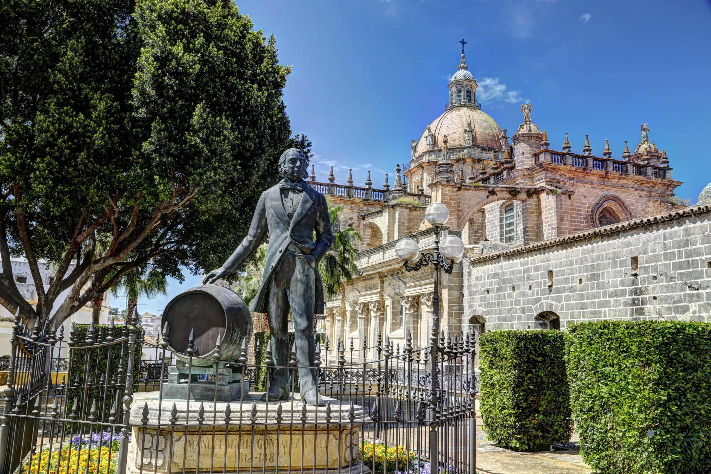

Ciudad del Vino, el flamenco, el caballo y el motor.
Jerez de la Frontera es una ciudad andaluza situada en la provincia de Cádiz, conocida mundialmente por su vino jerez o “sherry”, su tradición ecuestre y el flamenco. Con un casco histórico lleno de iglesias, palacios y bodegas centenarias, Jerez combina patrimonio, cultura y gastronomía. Además, su clima suave, sus fiestas —como la Feria del Caballo— y la hospitalidad de su gente la convierten en un destino atractivo para quienes buscan conocer la esencia del sur de España.
Organización territorial
Actualmente Jerez se ecnuentra dividido en 7 distritos, con distinta extensión y población.
| Número | Distrito | Barrios | Población | Extensión | Densidad (hab/km²) |
|---|---|---|---|---|---|
| 1 | Distrito Norte | 24 | 25817 | 12 km² | 2151,42 |
| 2 | Distrito Oeste | 20 | 28867 | 6,98 km² | 4135,67 |
| 3 | Distrito Centro | 32 | 34190 | 2,90 km² | 11789,66 |
| 4 | Distrito Sur | 25 | 32679 | 11,55 km² | 2829,35 |
| 5 | Distrito La Granja | 19 | 30765 | 4,57 km² | 6731,95 |
| 6 | Distrito Las Delicias | 35 | 38598 | 6,71 km² | 5752,30 |
| 7 | Distrito Rural | 26 | 7270 | 1143,52 km² | 6,36 |